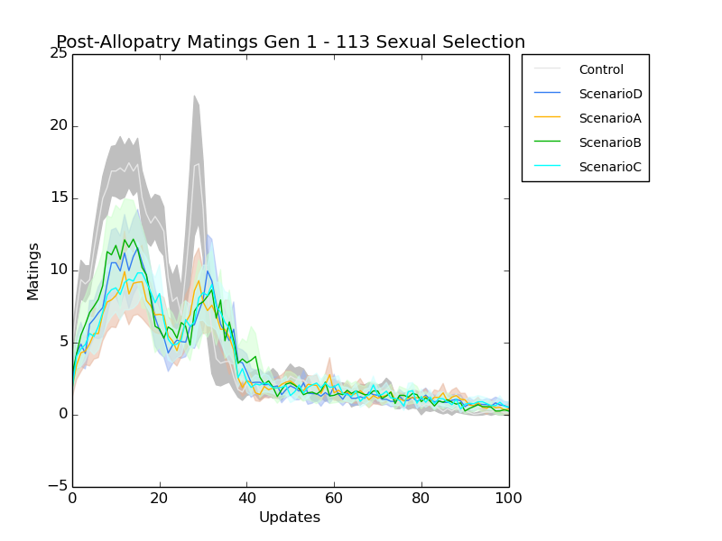
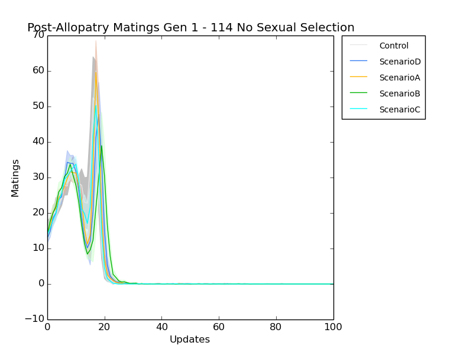
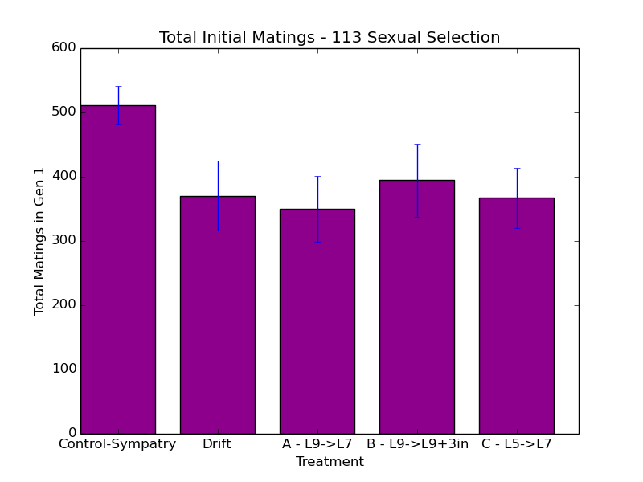
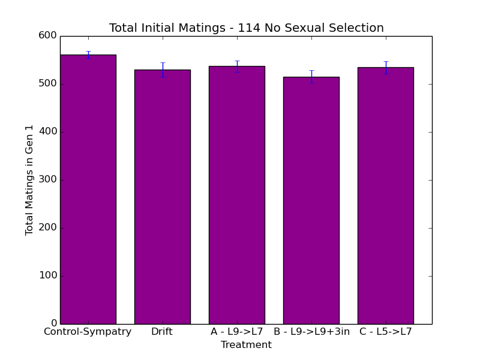
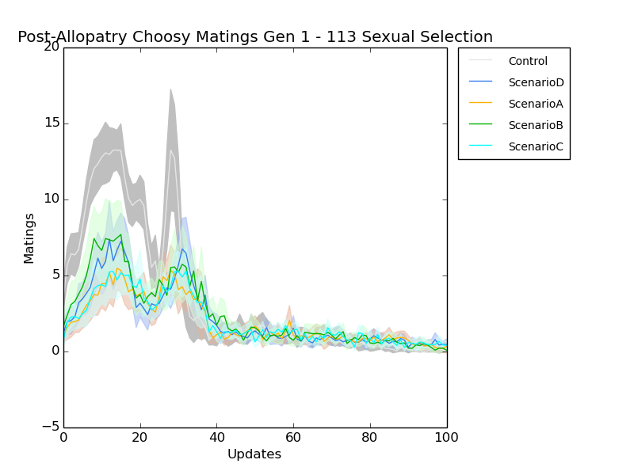
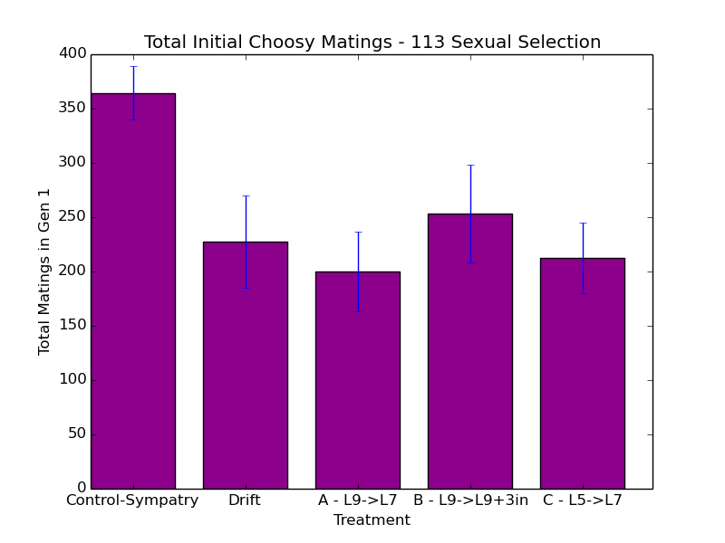
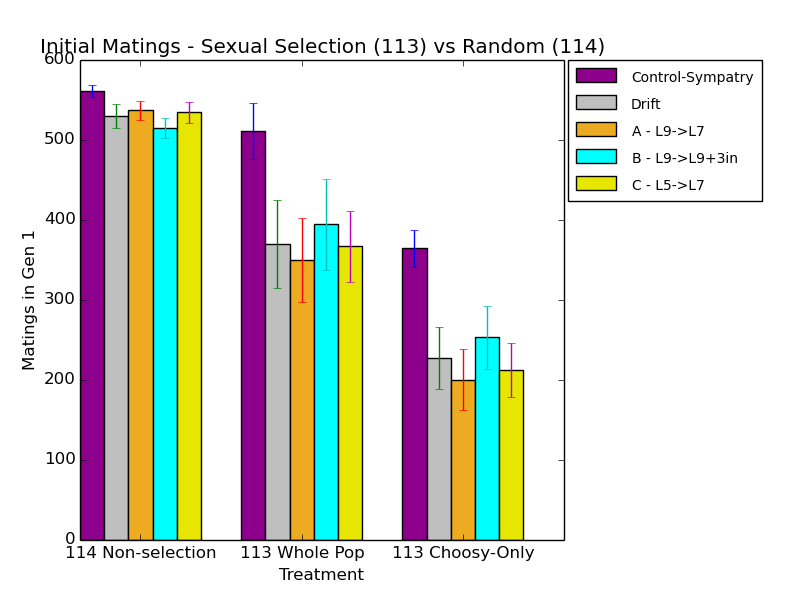
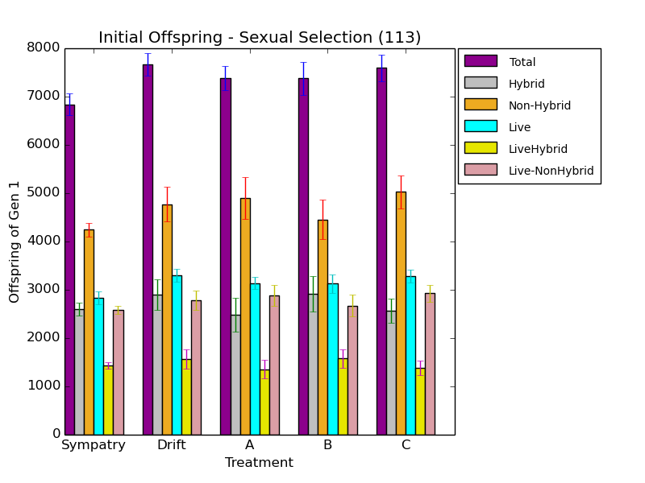
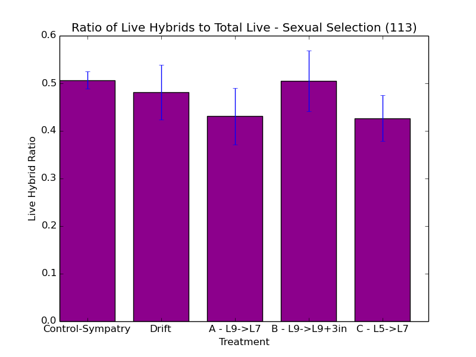
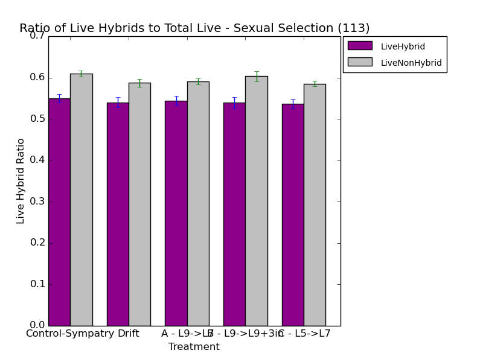

So, yeah, I had a meeting with Charles. Told him I have results.
One thing I'm doing is cleaning up how I generate my mating trials. I updated the code to dump out the parental generation, and the cell ID of the matings, so that they're easier to pull apart.
Below generates the updated data using the newly compiled Avida that includes the generation in the mating output.
caninoko@dev-intel14:~/mate_discrimination/output/113b_ExperimentalPipeline_8Bits$ gunzip Control_113002/events_III.cfg.gz caninoko@dev-intel14:~/mate_discrimination/output/113b_ExperimentalPipeline_8Bits$ gunzip Control_113002/environment_I_wholelogic9.cfg.gz caninoko@dev-intel14:~/mate_discrimination/output/113b_ExperimentalPipeline_8Bits$ cp Control_113002/*.cfg ./ caninoko@dev-intel14:~/mate_discrimination/output/113b_ExperimentalPipeline_8Bits$ gunzip */*.cfg.gz caninoko@dev-intel14:~/mate_discrimination/output/113b_ExperimentalPipeline_8Bits$ root="Control"; for seed in {113001..113030}; do if [ -e $root"_"$seed/*step2/detail-300000.spop* ]; then cd $root"_"$seed; zcat data*step2/detail-300000.spop* > detail-combined.spop; ../avida -s $seed -set EVENT_FILE ../events_III.cfg -set ENVIRONMENT_FILE ../environment_I_*.cfg -set DATA_DIR data__Control_step5; cd ../; fi; done
caninoko@dev-intel14:~/mate_discrimination/output/113_ExperimentalPipeline_8Bits$ cp ../../configs/113*/config/*.cfg ./ caninoko@dev-intel14:~/mate_discrimination/output/113_ExperimentalPipeline_8Bits$ gunzip */*.cfg.gz
caninoko@dev-intel14:~/mate_discrimination/output/113_ExperimentalPipeline_8Bits$ root="ScenarioA"; event="III"; envt="I"; for seed in {113001..113030}; do if [ -e $root"_"$seed/*step2a/detail-300000.spop* ]; then cd $root"_"$seed; zcat data__*_step2a/detail-300000.spop* > detail-combined.spop; zcat data__*_step2b/detail-300000.spop* | tail -n +24 >> detail-combined.spop; ../avida -s $seed -set EVENT_FILE ../events_$event"."cfg -set ENVIRONMENT_FILE ../environment_$envt"_"*.cfg -set DATA_DIR data__$root"_"step5; cd ../; fi; done
caninoko@dev-intel14:~/mate_discrimination/output/113_ExperimentalPipeline_8Bits$ root="ScenarioB"; event="III"; envt="IV"; for seed in {113001..113030}; do if [ -e $root"_"$seed/*step2a/detail-300000.spop* ]; then cd $root"_"$seed; zcat data__*_step2a/detail-300000.spop* > detail-combined.spop; zcat data__*_step2b/detail-300000.spop*| tail -n +24 >> detail-combined.spop; ../avida -s $seed -set EVENT_FILE ../events_$event"."cfg -set ENVIRONMENT_FILE ../environment_$envt"_"*.cfg -set DATA_DIR data__$root"_"step5; cd ../; fi; done
caninoko@dev-intel14:~/mate_discrimination/output/113_ExperimentalPipeline_8Bits$ root="ScenarioC"; event="III"; envt="I"; for seed in {113001..113030}; do if [ -e $root"_"$seed/*step2a/detail-300000.spop* ]; then cd $root"_"$seed; zcat data__*_step2a/detail-300000.spop* > detail-combined.spop; zcat data__*_step2b/detail-300000.spop* | tail -n +24 >> detail-combined.spop; ../avida -s $seed -set EVENT_FILE ../events_$event"."cfg -set ENVIRONMENT_FILE ../environment_$envt"_"*.cfg -set DATA_DIR data__$root"_"step5; cd ../; fi; done
caninoko@dev-intel14:~/mate_discrimination/output/113_ExperimentalPipeline_8Bits$ root="ScenarioD_Drift"; event="III"; envt="I"; for seed in {113001..113030}; do if [ -e $root"_"$seed/*step2a/detail-300000.spop* ]; then cd $root"_"$seed; zcat data__*_step2a/detail-300000.spop* > detail-combined.spop; zcat data__*_step2b/detail-300000.spop* | tail -n +24 >> detail-combined.spop; ../avida -s $seed -set EVENT_FILE ../events_$event"."cfg -set ENVIRONMENT_FILE ../environment_$envt"_"*.cfg -set DATA_DIR data__$root"_"step5; cd ../; fi; done
Below re-pulls the mating data using only generation 1.
# First half of each line gives information about the 'chosen' mate # Second half of each line gives information about the 'chooser' # 1 2 3 4 5 6 7 8 9 10 11 12 13 # genome timestamp merit mating_type mate_preference mating_display_a mating_display_b mating_display_c group mate_id parent_cell_id parent_id parent_generation
caninoko@dev-intel14:~/mate_discrimination/output/113b_ExperimentalPipeline_8Bits$ for k in *; do if [ -e $k"/"*_step5/mates ]; then echo $k; cd $k/*_step5/mates/; pwd; rm matings_timeseries.dat; for i in {0..250}; do echo $i; awk -v i="$i" '{if (($13 == 1) && (($11 > 1799 && $24 < 1800) || ($11 < 1800 && $24 > 1799))) print $2,$3,$4,$5,$8,$11,"--->",$15,$16,$17, $18,$21,$24}' mates-$i".dat" | wc -l >> matings_timeseries.dat ; done; cd ../../../; fi ; done
caninoko@dev-intel14:~/mate_discrimination/output/113_ExperimentalPipeline_8Bits$ for k in *; do if [ -e $k"/"*_step5/mates ]; then echo $k; cd $k/*_step5/mates/; pwd; rm matings_timeseries.dat; for i in {0..250}; do echo $i; awk -v i="$i" '{if (($13 == 1) && (($11 > 1799 && $24 < 1800) || ($11 < 1800 && $24 > 1799))) print $2,$3,$4,$5,$8,$11,"--->",$15,$16,$17, $18,$21,$24}' mates-$i".dat" | wc -l >> matings_timeseries.dat ; done; cd ../../../; fi ; done
And plot:
caninoko@dev-intel14:~/mate_discrimination/output/113_ExperimentalPipeline_8Bits$ python ../../../research_scripts/quickplot.py --error --end_at 100 -x Updates -y Matings -t "Post-Allopatry Matings Gen 1 - 113 Sexual Selection" 113_matings_100u_postallopatry_gen1 matings_timeseries.dat 1 "../113b*/Control_*/*_step5/mates/" Control matings_timeseries.dat 1 "ScenarioD_*/*_step5/mates/" ScenarioD matings_timeseries.dat 1 "ScenarioA_*/*_step5/mates/" ScenarioA matings_timeseries.dat 1 "ScenarioB_*/*_step5/mates/" ScenarioB matings_timeseries.dat 1 "ScenarioC_*/*_step5/mates/" ScenarioC
Above was also all done for 114 run (no sexual selection)

Awesome. Ok, next step is to combine all these into just bar graphs, since the time component is meaningless.
caninoko@dev-intel14:~/mate_discrimination/output/113_ExperimentalPipeline_8Bits$ for k in *; do if [ -e $k"/"*_step5/mates ]; then echo $k; cd $k/*_step5/mates/; pwd; python ~/research_scripts/common/aggregate_file.py --sum matings_timeseries.dat > sum_matings_gen1.dat ; cd ../../../; fi ; done root="ScenarioA"; for k in $root"_"*; do if [ -e $k"/"*_step5/mates ]; then echo $k; cd $k/*_step5/mates/; pwd; cat sum_matings_gen1.dat >> ../../../$root"_"sum_matings_gen1.dat ; cd ../../../; fi ; done root="ScenarioB"; for k in $root"_"*; do if [ -e $k"/"*_step5/mates ]; then echo $k; cd $k/*_step5/mates/; pwd; cat sum_matings_gen1.dat >> ../../../$root"_"sum_matings_gen1.dat ; cd ../../../; fi ; done root="ScenarioC"; for k in $root"_"*; do if [ -e $k"/"*_step5/mates ]; then echo $k; cd $k/*_step5/mates/; pwd; cat sum_matings_gen1.dat >> ../../../$root"_"sum_matings_gen1.dat ; cd ../../../; fi ; done root="ScenarioD"; for k in $root"_"*; do if [ -e $k"/"*_step5/mates ]; then echo $k; cd $k/*_step5/mates/; pwd; cat sum_matings_gen1.dat >> ../../../$root"_"sum_matings_gen1.dat ; cd ../../../; fi ; done caninoko@dev-intel14:~/mate_discrimination/output/113b_ExperimentalPipeline_8Bits$ for k in *; do if [ -e $k"/"*_step5/mates ]; then echo $k; cd $k/*_step5/mates/; pwd; python ~/research_scripts/common/aggregate_file.py --sum matings_timeseries.dat > sum_matings_gen1.dat ; cd ../../../; fi ; done for k in Control*; do if [ -e $k"/"*_step5/mates ]; then echo $k; cd $k/*_step5/mates/; pwd; cat sum_matings_gen1.dat >> ../../../Control_sum_matings_gen1.dat ; cd ../../../; fi ; done
Finally, plot. (did all the same things to run 114 with no sexual selection).
caninoko@dev-intel14:~/mate_discrimination/output/113_ExperimentalPipeline_8Bits$ python ~/research_scripts/graph_generation/bar_chart_from_csv.py -x Treatment -y "Total Matings in Gen 1" -t "Total Initial Matings - 113 Sexual Selection" --xticks="Control-Sympatry,Drift,A - L9->L7,B - L9->L9+3in,C - L5->L7" --error 113_sum_matings_gen1.png ../113b_ExperimentalPipeline_8Bits/Control_sum_matings_gen1.dat ScenarioD_sum_matings_gen1.dat ScenarioA_sum_matings_gen1.dat ScenarioB_sum_matings_gen1.dat ScenarioC_sum_matings_gen1.dat

Explained my graphs. Charles finds that the differences aren't very big.
Suggestions to make them use (see notebook)
Here, I'm going to pull the matings of just the organisms that are using the mating display.
# First half of each line gives information about the 'chosen' mate # Second half of each line gives information about the 'chooser' # 1 2 3 4 5 6 7 8 9 10 11 12 13 # genome timestamp merit mating_type mate_preference mating_display_a mating_display_b mating_display_c group mate_id parent_cell_id parent_id parent_generation
caninoko@dev-intel14:~/mate_discrimination/output/113b_ExperimentalPipeline_8Bits$ for k in *; do if [ -e $k"/"*_step5/mates ]; then echo $k; cd $k/*_step5/mates/; pwd; rm matings_timeseries.dat; for i in {0..250}; do echo $i; awk -v i="$i" '{if (($13 == 1) && ($18 > 1) && (($11 > 1799 && $24 < 1800) || ($11 < 1800 && $24 > 1799))) print $2,$3,$4,$5,$8,$11,"--->",$15,$16,$17, $18,$21,$24}' mates-$i".dat" | wc -l >> choosy_matings_timeseries.dat ; done; cd ../../../; fi ; done
caninoko@dev-intel14:~/mate_discrimination/output/113_ExperimentalPipeline_8Bits$ for k in *; do if [ -e $k"/"*_step5/mates ]; then echo $k; cd $k/*_step5/mates/; pwd; rm matings_timeseries.dat; for i in {0..250}; do echo $i; awk -v i="$i" '{if (($13 == 1) && ($18 > 1) && (($11 > 1799 && $24 < 1800) || ($11 < 1800 && $24 > 1799))) print $2,$3,$4,$5,$8,$11,"--->",$15,$16,$17, $18,$21,$24}' mates-$i".dat" | wc -l >> choosy_matings_timeseries.dat ; done; cd ../../../; fi ; done
And plot:
caninoko@dev-intel14:~/mate_discrimination/output/113_ExperimentalPipeline_8Bits$ python ../../../research_scripts/quickplot.py --error --end_at 100 -x Updates -y Matings -t "Post-Allopatry Choosy Matings Gen 1 - 113 Sexual Selection" 113_choosy_matings_100u_postallopatry_gen1 choosy_matings_timeseries.dat 1 "../113b*/Control_*/*_step5/mates/" Control choosy_matings_timeseries.dat 1 "ScenarioD_*/*_step5/mates/" ScenarioD choosy_matings_timeseries.dat 1 "ScenarioA_*/*_step5/mates/" ScenarioA choosy_matings_timeseries.dat 1 "ScenarioB_*/*_step5/mates/" ScenarioB choosy_matings_timeseries.dat 1 "ScenarioC_*/*_step5/mates/" ScenarioC

caninoko@dev-intel14:~/mate_discrimination/output/113_ExperimentalPipeline_8Bits$ for k in *; do if [ -e $k"/"*_step5/mates ]; then echo $k; cd $k/*_step5/mates/; pwd; python ~/research_scripts/common/aggregate_file.py --sum choosy_matings_timeseries.dat > sum_choosy_matings_gen1.dat ; cd ../../../; fi ; done root="ScenarioA"; for k in $root"_"*; do if [ -e $k"/"*_step5/mates ]; then echo $k; cd $k/*_step5/mates/; pwd; cat sum_choosy_matings_gen1.dat >> ../../../$root"_"sum_choosy_matings_gen1.dat ; cd ../../../; fi ; done; root="ScenarioB"; for k in $root"_"*; do if [ -e $k"/"*_step5/mates ]; then echo $k; cd $k/*_step5/mates/; pwd; cat sum_choosy_matings_gen1.dat >> ../../../$root"_"sum_choosy_matings_gen1.dat ; cd ../../../; fi ; done; root="ScenarioC"; for k in $root"_"*; do if [ -e $k"/"*_step5/mates ]; then echo $k; cd $k/*_step5/mates/; pwd; cat sum_choosy_matings_gen1.dat >> ../../../$root"_"sum_choosy_matings_gen1.dat ; cd ../../../; fi ; done; root="ScenarioD"; for k in $root"_"*; do if [ -e $k"/"*_step5/mates ]; then echo $k; cd $k/*_step5/mates/; pwd; cat sum_choosy_matings_gen1.dat >> ../../../$root"_"sum_choosy_matings_gen1.dat ; cd ../../../; fi ; done; caninoko@dev-intel14:~/mate_discrimination/output/113b_ExperimentalPipeline_8Bits$ for k in *; do if [ -e $k"/"*_step5/mates ]; then echo $k; cd $k/*_step5/mates/; pwd; python ~/research_scripts/common/aggregate_file.py --sum choosy_matings_timeseries.dat > sum_choosy_matings_gen1.dat ; cd ../../../; fi ; done for k in Control*; do if [ -e $k"/"*_step5/mates ]; then echo $k; cd $k/*_step5/mates/; pwd; cat sum_choosy_matings_gen1.dat >> ../../../Control_sum_choosy_matings_gen1.dat ; cd ../../../; fi ; done
Finally, plot. (did all the same things to run 114 with no sexual selection).
caninoko@dev-intel14:~/mate_discrimination/output/113_ExperimentalPipeline_8Bits$ python ~/research_scripts/graph_generation/bar_chart_from_csv.py -x Treatment -y "Matings in Gen 1" -t "Initial Matings - Sexual Selection (113) vs Random (114)" --pair --groups=3 --xticks="114 Non-selection,113 Whole Pop,113 Choosy-Only" --legend="Control-Sympatry,Drift,A - L9->L7,B - L9->L9+3in,C - L5->L7" --error 113_114_sum_all_matings_gen1.png \ ../114b_ExperimentalPipeline_NoSexualSelection/Control_sum_matings_gen1.dat ../114_ExperimentalPipeline_NoSexualSelection/ScenarioD_sum_matings_gen1.dat ../114_ExperimentalPipeline_NoSexualSelection/ScenarioA_sum_matings_gen1.dat ../114_ExperimentalPipeline_NoSexualSelection/ScenarioB_sum_matings_gen1.dat ../114_ExperimentalPipeline_NoSexualSelection/ScenarioC_sum_matings_gen1.dat \ ../113b_ExperimentalPipeline_8Bits/Control_sum_matings_gen1.dat ScenarioD_sum_matings_gen1.dat ScenarioA_sum_matings_gen1.dat ScenarioB_sum_matings_gen1.dat ScenarioC_sum_matings_gen1.dat \ ../113b_ExperimentalPipeline_8Bits/Control_sum_choosy_matings_gen1.dat ScenarioD_sum_choosy_matings_gen1.dat ScenarioA_sum_choosy_matings_gen1.dat ScenarioB_sum_choosy_matings_gen1.dat ScenarioC_sum_choosy_matings_gen1.dat


Summing up the post-zygotic information into bar-chart-digestibles.
caninoko@dev-intel14:~/mate_discrimination/output/113_ExperimentalPipeline_8Bits$ for k in *; do if [ -e $k"/"*_step3 ]; then echo $k; cd $k/*_step3/; pwd; python ~/research_scripts/common/aggregate_file.py --header --sum offspring.cleaned.dat > sum_offspring.cleaned.dat ; cd ../..; fi ; done target="sum_offspring.cleaned.dat"; root="ScenarioA"; for k in $root"_"*; do if [ -e $k"/"*_step3 ]; then echo $k; cd $k/*_step3/; pwd; cat $target >> ../../$root"_"$target ; cd ../../; fi ; done; root="ScenarioB"; for k in $root"_"*; do if [ -e $k"/"*_step3 ]; then echo $k; cd $k/*_step3/; pwd; cat $target >> ../../$root"_"$target ; cd ../../; fi ; done; root="ScenarioC"; for k in $root"_"*; do if [ -e $k"/"*_step3 ]; then echo $k; cd $k/*_step3/; pwd; cat $target >> ../../$root"_"$target ; cd ../../; fi ; done; root="ScenarioD"; for k in $root"_"*; do if [ -e $k"/"*_step3 ]; then echo $k; cd $k/*_step3/; pwd; cat $target >> ../../$root"_"$target ; cd ../../; fi ; done; caninoko@dev-intel14:~/mate_discrimination/output/113b_ExperimentalPipeline_8Bits$ for k in *; do if [ -e $k"/"*_step3 ]; then echo $k; cd $k/*_step3/; pwd; python ~/research_scripts/common/aggregate_file.py --header --sum offspring.cleaned.dat > sum_offspring.cleaned.dat ; cd ../..; fi ; done; target="sum_offspring.cleaned.dat"; for k in Control*; do if [ -e $k"/"*_step3/ ]; then echo $k; cd $k/*_step3/; pwd; cat $target >> ../../Control_$target ; cd ../../; fi ; done
Plot!
caninoko@dev-intel14:~/mate_discrimination/output/113_ExperimentalPipeline_8Bits$ python ~/research_scripts/graph_generation/bar_chart_from_csv.py -x Treatment -y "Offspring of Gen 1" -t "Initial Offspring - Sexual Selection (113)" --pair --groups=5 --xticks="Sympatry,Drift,A,B,C" --legend="Total,Hybrid,Non-Hybrid,Live,LiveHybrid,Live-NonHybrid" --columns="2,5,7,3,4,6" --error 113_sum_offspring_gen1.png \ ../113b_ExperimentalPipeline_8Bits/Control_sum_offspring.cleaned.dat ScenarioD_sum_offspring.cleaned.dat ScenarioA_sum_offspring.cleaned.dat ScenarioB_sum_offspring.cleaned.dat ScenarioC_sum_offspring.cleaned.dat

Right, so post-zygotic isn't a thing, at least among the total population, of which I can't tell which are choosy because the detail file doesn't contain that information. :/ So, new runs need to be run.
caninoko@dev-intel14:~/mate_discrimination/output/113_ExperimentalPipeline_8Bits$ for i in *sum_offspring.cleaned.dat; do echo $i; awk -F "," '{print $4/$3}' $i > $i"_live_hybrid_ratio" ; done python ~/research_scripts/graph_generation/bar_chart_from_csv.py -x Treatment -y "Live Hybrid Ratio" -t "Ratio of Live Hybrids to Total Live - Sexual Selection (113)" --pair --xticks="Control-Sympatry,Drift,A - L9->L7,B - L9->L9+3in,C - L5->L7" --error 113_ratio_live_hybrids_gen1.png ../113b_ExperimentalPipeline_8Bits/Control_sum_offspring.cleaned.dat_live_hybrid_ratio ScenarioD_sum_offspring.cleaned.dat_live_hybrid_ratio ScenarioA_sum_offspring.cleaned.dat_live_hybrid_ratio ScenarioB_sum_offspring.cleaned.dat_live_hybrid_ratio ScenarioC_sum_offspring.cleaned.dat_live_hybrid_ratio
caninoko@dev-intel14:~/mate_discrimination/output/113_ExperimentalPipeline_8Bits$ for i in *sum_offspring.cleaned.dat; do echo $i; awk -F "," '{print $4/$5 "," $6/$7}' $i > $i"_hybrid_ratio" ; done python ~/research_scripts/graph_generation/bar_chart_from_csv.py -x Treatment -y "Live Hybrid Ratio" -t "Ratio of Live Hybrids to Total Live - Sexual Selection (113)" --pair --legend="LiveHybrid,LiveNonHybrid" --groups=5 --xticks="Control-Sympatry,Drift,A - L9->L7,B - L9->L9+3in,C - L5->L7" --error 113_ratio_liveoffspring_gen1.png ../113b_ExperimentalPipeline_8Bits/Control_sum_offspring.cleaned.dat_hybrid_ratio ScenarioD_sum_offspring.cleaned.dat_hybrid_ratio ScenarioA_sum_offspring.cleaned.dat_hybrid_ratio ScenarioB_sum_offspring.cleaned.dat_hybrid_ratio ScenarioC_sum_offspring.cleaned.dat_hybrid_ratio

Set some runs going.